ARCHITECTURE · RENEWAL · BUILDING ENGINEERING
XINZHU GAO · ARCHITECTURAL DESIGNER & BUILDING ENGINEER
Architecture that connects
people, place and performance.
Based in Lecco, Italy
Politecnico di MilanoView selected work ↓
Politecnico di MilanoView selected work ↓
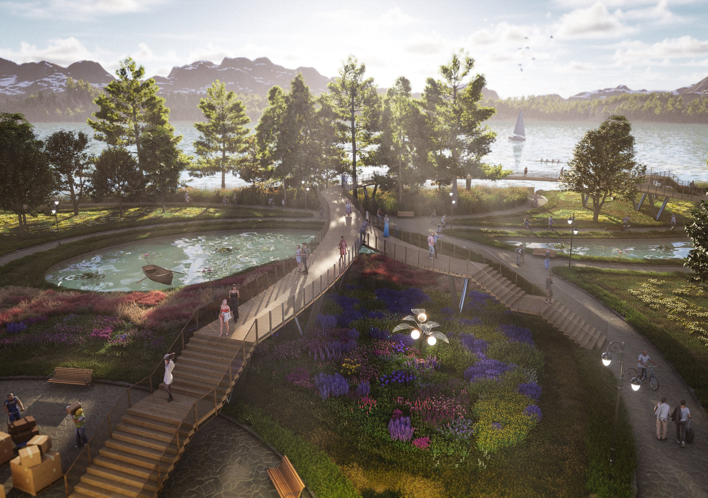
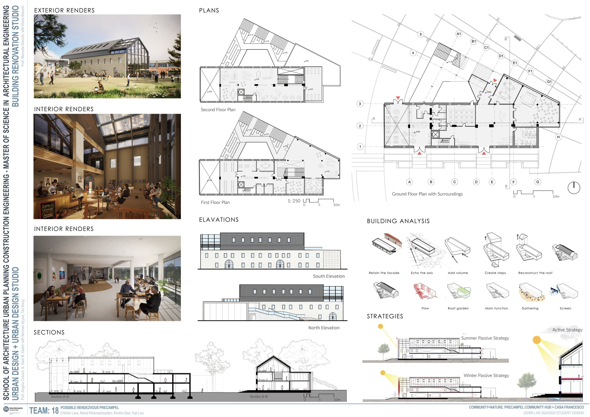
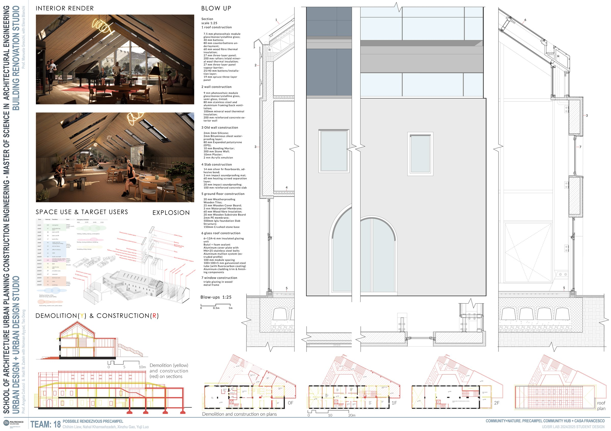
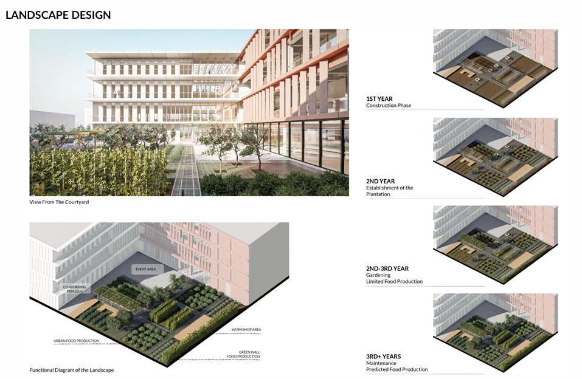
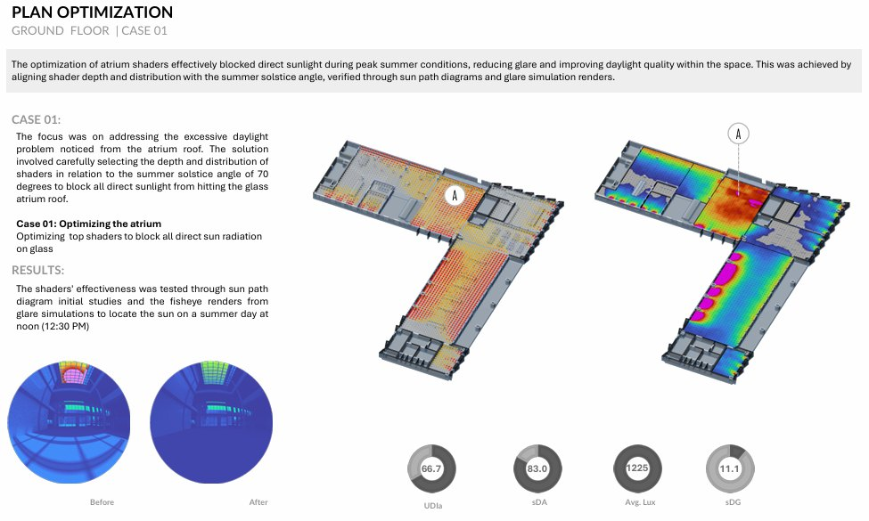
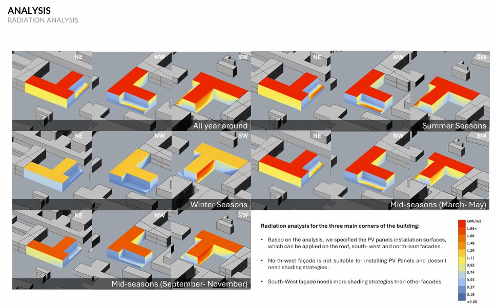
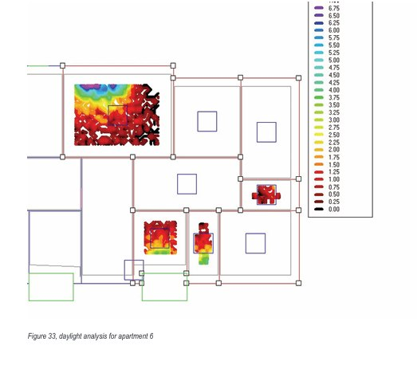
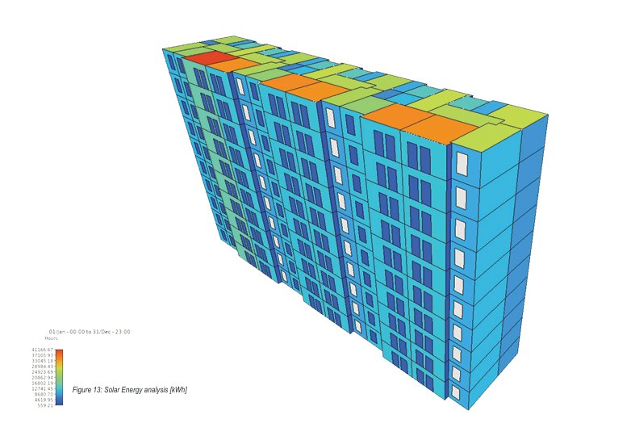
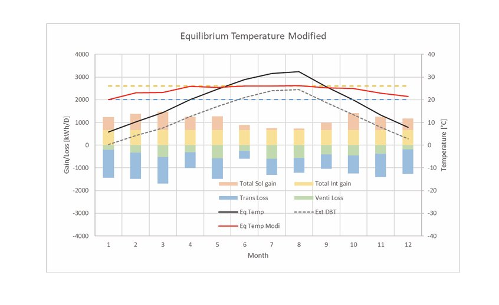
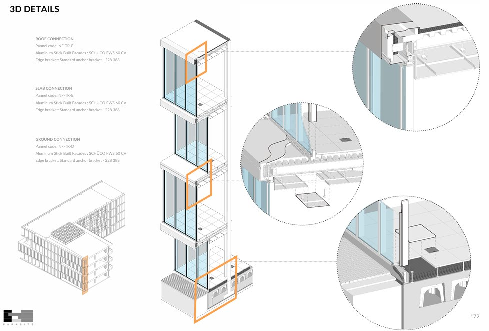
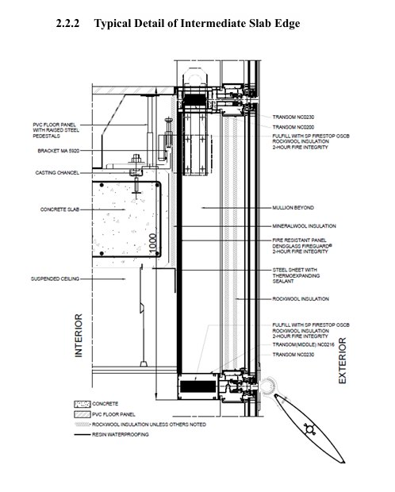
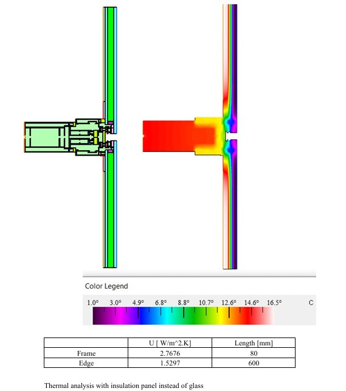
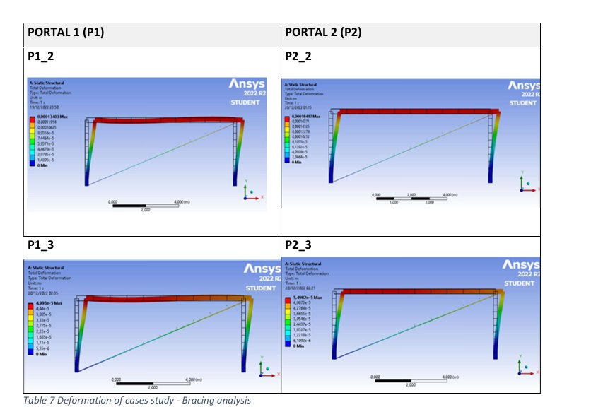
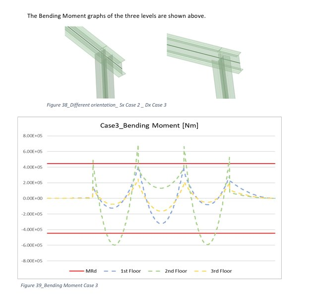
01 / 14COMMUNITY + NATURE · LAKE PUSIANO